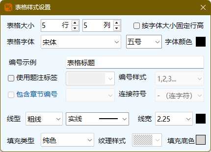

表格与图片功能
Word Ribbon菜单格式助手中如下图所示部分可进行表格及图片的操作：
应用到全文表格、应用到全文图片 为模式开关，开启时，其后针对表格、图片的设置将对全文表格、图片生效。
左、中、右对齐 将表格或者图片对齐到页面的左、中、右位置。尽管当前设置图片所在行存在缩进，程序将移除该缩进，以页面宽度为基础，进行对齐操作。
首行、首列加粗 将表格的第一行或第一列设置为粗体字，当设置重复标题行时，将视所有重复标题行为首行。
表格外框 将表格按照默认设置的线型及线宽增加外框，默认设置可以从加载项设置中更改。
表格单倍行距 将表格所有单元格内容的段落样式设置为单倍行距。该功能主要为便于表格的布置，避免表格因内容行距设置过大，导致变形等问题。
删除空行 将表格所有单元格内容的前导、尾随空行删除，内容中的空行并不会被删除。类似于单倍行距的作用，避免表格因单元格无效内容变形。在此建议表格的尺寸应通过单元格尺寸调整来控制，不应用内容（如空行）填充来调整。
移除左缩进 将表格所有单元格内容的段落格式中的左缩进、首行缩进设置为0。调整文本距离表格线距离建议调整单元格内边距。
图片高、宽设置 将图片的高度宽度设置为指定的高度宽度，单位为厘米。再Ribbon界面中，仅能单独设置高度或者宽度，且为等比例调整。如需要同时调整，则要调出图表格式设置界面进行设置。
图片单倍行距 该功能可以将嵌入行内的图片的行高设置为单倍行距，避免因误设固定行距导致图片被遮挡的问题。
单击Ribbon菜单表格或图片右下角的小箭头 ，可调出图表格式设置界面，进行更多设置：
，可调出图表格式设置界面，进行更多设置：
图表格式界面中多数功能与Ribbon界面功能相同，不再赘述。
图、表缩进对齐 将图片或者表格按照给定的左缩进值进行对齐，缩进值相对于左侧页边距，单位为厘米。
表格外框线型 本界面中设置的表格外框线型及线宽，仅本次运行生效，与默认值设置无关。
单元格内边距 设置单元格的内边距，即文本距离表格线的距离，单位为厘米。
图片尺寸调整 本界面中可以设置同时调整图片的高度和宽度，但如此将改变图片的原始比例，可能引起图片内容变形。
新建表格 在Ribbon表格功能区，提供了一个新建表格的选项按钮，点击可调出下拉表格样式，一共10种。选择其中一种则可以在当前插入点新建该样式的表格。单击下拉列表底部的表格样式设置按钮，调出设置表格样式设置界面如下图：
通过表格样式设置界面，可以调整预定义的样式1至样式10最终呈现的效果。选择使用题注标签，则可以在表格标题前插入自动编号标签。线型分为粗线、细线、标题栏底线三种，例如当选择样式1（全线表，细线），表示表格均用细线绘制，此时设置粗线线型线宽并无意义，但标题栏底线始终指向表头所在行的底线，如设置为不一样的线型，将得到不同于下拉列表中样式的表格。填充类型分为纯色、纹理或者纯色加纹理三种类型，下拉列表中描述的填充，将根据本界面中设置的填充类型来填充。 本界面设置在本次Word程序运行中暂存于内存中，重新启动Word程序后重置为初始设置。按字体大小固定行高选项为，程序根据字高确定表格行高，并设定为固定值。